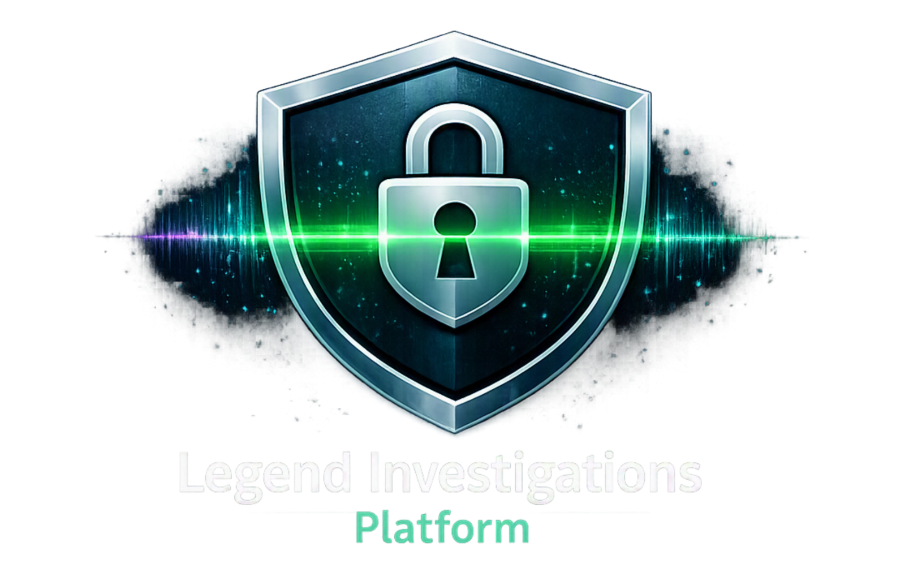
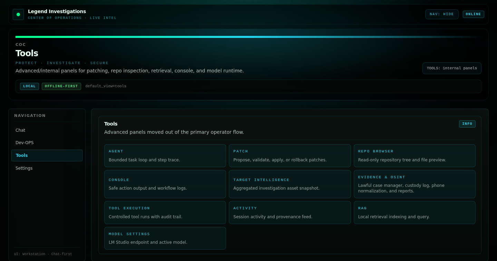
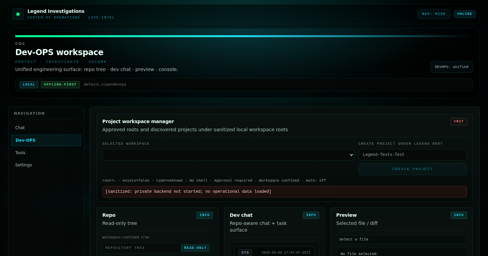

Legend Investigations Platform
An offline-first private platform for approved investigation workflows, controlled tool execution, local evidence support and review-oriented operator surfaces.

PROJECT OVERVIEW
The maintained private repository describes an offline-first Tool Execution Engine and Center of Operations dashboard for approved reconnaissance and investigation workflows. Its current frontend includes a unified operations shell, controlled tools, workspace/repository surfaces, local retrieval, and a lawful Evidence & OSINT case-manager path.
This public page intentionally describes the platform boundary and engineering shape without publishing targets, case data, packet captures, credentials or operational methods.
THE PROBLEM
Investigation-support work becomes difficult to review when tool runs, evidence references, notes and operator decisions are scattered across terminals and ad-hoc files. The engineering problem is to provide a local, bounded surface where actions are policy-aware, evidence can be referenced and human review remains explicit.
HOW IT IS USED
An authorised operator opens the local operations shell, chooses the appropriate workspace or tool surface, reviews the proposed inputs and runs only approved actions. Results are returned to the local console or evidence-support workflow for inspection. Lawful case work can then organize cases, evidence references, custody events, findings, timelines and reports under explicit review; the public portfolio never uses real subjects or records.
PROJECT EVIDENCE
Sanitized captures from the private working prototype show the bounded tool launcher and local-only operations shell. They contain no targets, case records, credentials, network details or operational output. The authored hero artwork is not used as evidence.


HOW IT WORKS
The platform separates the operator shell from bounded backend services. A local frontend selects a workspace, the FastAPI boundary validates and routes the request, and results or evidence references are returned to a reviewable local surface.
ENGINEERING HIGHLIGHTS
- FastAPI routes and service modules create a typed boundary around local tools and case-support actions.
- React, Vite and TypeScript compose an operations shell from focused workspaces rather than one opaque screen.
- Evidence-oriented paths include hashing, custody/audit concepts and case-scoped review surfaces.
- Offline-first defaults keep local AI, retrieval and operator workflows explicit rather than silently dependent on a remote provider.
- Tool execution is bounded by approved workflows and human review, not presented as autonomous investigation.
CURRENT CAPABILITIES
- Center of Operations shell with Dev-OPS, chat, tools and settings entry points.
- Read-only repository/browser and console-oriented workspace surfaces.
- Controlled tool-execution and target-intelligence workflow surfaces.
- Local retrieval, model settings and offline-first operator support.
- Private Evidence & OSINT case-manager path for case, evidence, custody, findings, timeline, transaction and report workflows.
POTENTIAL / NEXT APPLICATIONS
Could be extended to support approved multi-user roles, stronger deployment packaging and organization-wide evidence retention policies. Potential applications include an internal security-review workbench, a lawful investigation case desk and a local engineering copilot for evidence-backed troubleshooting. The architecture could be adapted to other review-first operations platforms after authorization, threat modeling and data-governance requirements are agreed.
TECHNOLOGY
Verified project-specific stack: Python, FastAPI, Pydantic-style API models, React, Vite, TypeScript, Tailwind CSS, SQLite / local file storage, and local browser tooling. Private tool adapters and integrations are intentionally not enumerated.
LIMITATIONS / PRIVACY
This is a private prototype. Use is limited to explicitly authorised work. No targets, subjects, employee data, PCAP contents, credentials, private endpoints, tool output or operational methods are published. The screenshots are shell-level evidence only; they do not prove production deployment or external service acceptance.
RELATED PROJECTS / LINKS
Return to the public-safe engineering project hub.
BACK TO PROJECT HUB